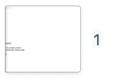
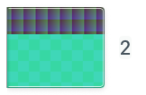
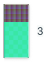
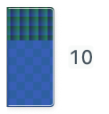
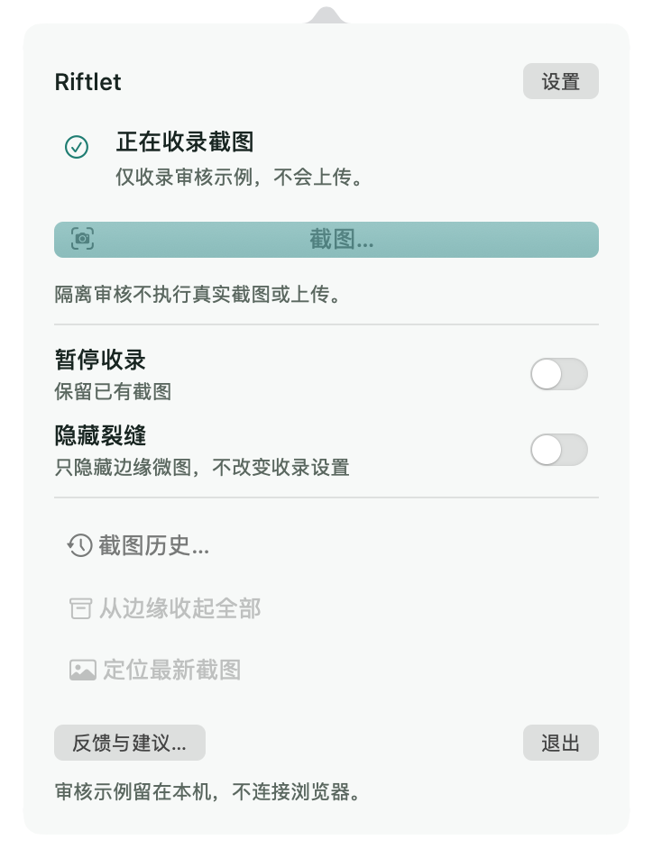
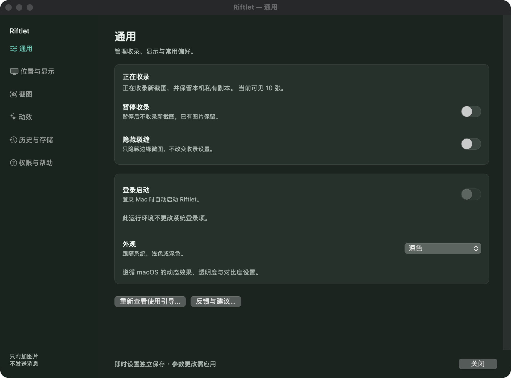
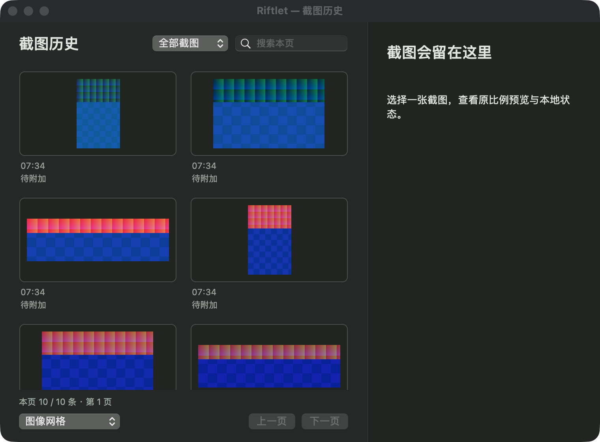
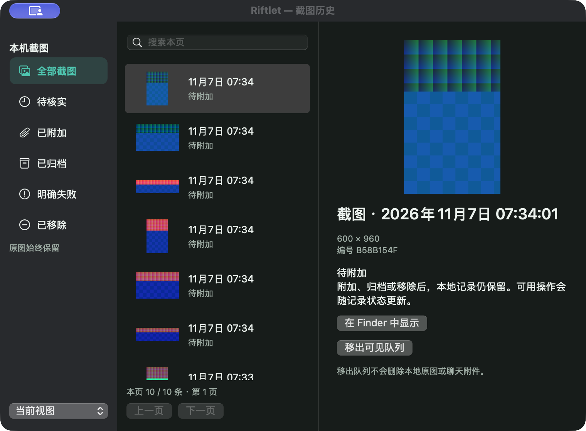

1 张：完整 App 实际收录系统窗口截图





这是原始窗口与录屏索引，不是产品网页原型。完整 App 二进制 fe5b09c… 运行于独立 UUID 数据根；所有图片均为自有合成内容。原始窗口分别保存，图片之间的排列属于本查看器，不代表实际桌面布局。实际坐标和图层见上级 artifacts.json。
普通浏览器工具禁用，因此没有本轮 ChatGPT 附件接收证据。状态栏严格鼠标命中部分受当前空间遮挡限制；AX、CUA 与 CGEvent 的证据等级分别记录。没有把导出失败或 exit 0 当作 PASS。















仅包含自有窗口；黑色空白不是实际壁纸。源帧为原尺寸，视频为有损编码，录制采样率不是产品帧率。
仅包含自有窗口；黑色空白不是实际壁纸。源帧为原尺寸，视频为有损编码，录制采样率不是产品帧率。
仅包含自有窗口；黑色空白不是实际壁纸。源帧为原尺寸，视频为有损编码，录制采样率不是产品帧率。